adataclaw 客户诊断 SKILL
让扎根一线的你，把时间还给客户；让等待结果的他，拿到真正有价值的诊断
为一线运营提效 · 为客户创造高质量诊断结果 · 让每一次分析都快、准、深
01 · 背景与痛点
⚠️ 原有诊断链路 · 效率瓶颈亟待突破
📢 客户侧
!投放问题出现时需离线自查，排查路径繁琐，客户体验差
!问题难快速定位，依赖人工层层下钻，响应滞后影响投放
📢 一线同学
!需手动拉取数据、分模块逐一分析，操作链路长且繁琐
!从分析到输出结论，通常耗时 45–60 分钟，复杂情况甚至隔天
📢 能力瓶颈
!现有工具在逻辑性、结论输出和深度分析上仍有提升空间
!VIP 客户对深层分析短时获取的诉求难以满足
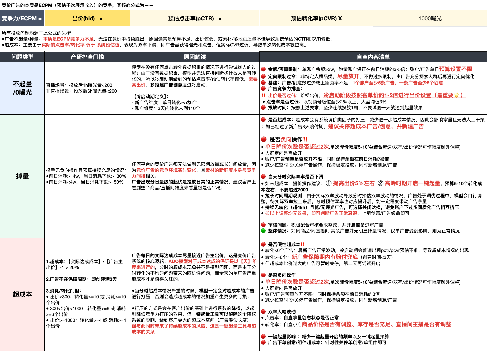
旧流程 · 客户离线自查路径繁琐
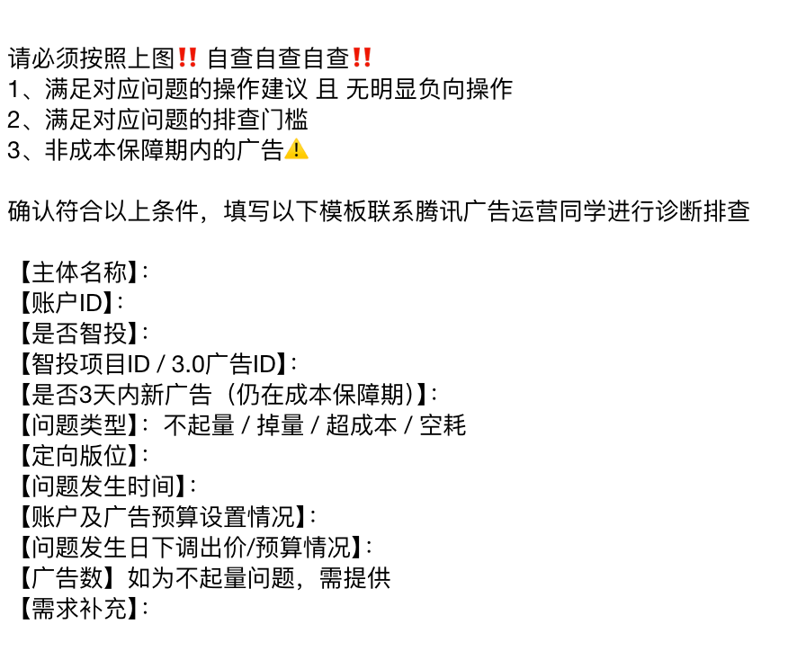
旧工具 · 诊断模版形态（待优化）
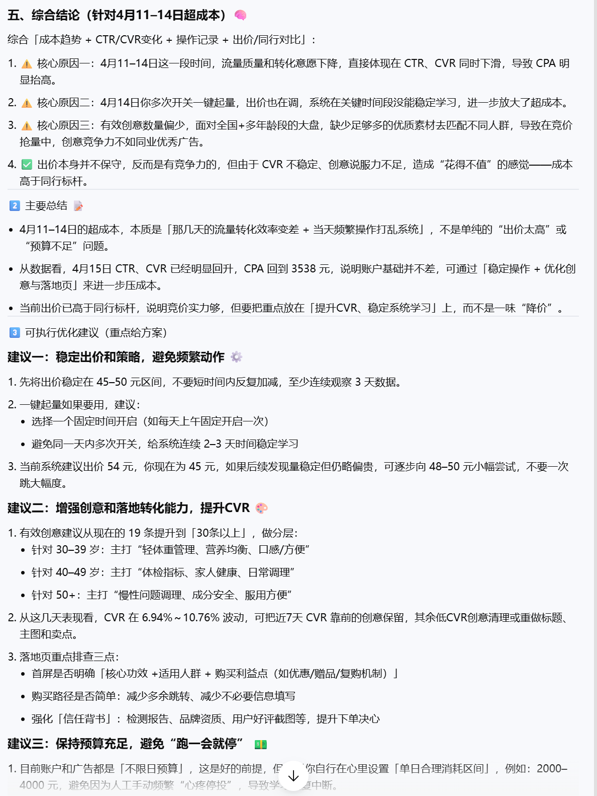
内部诊断工具 · 仍有迭代提升空间
02 · 解决方案
🔄 adataclaw 客户诊断 SKILL · AI 驱动的广告诊断智能体
📢 流程对比
BEFORE · 原来
人工驱动 · 效率瓶颈
手动拉数 → 分模块下钻 → 逐步归因 → 人工撰写结论
耗时 45–60 min，复杂情况隔天
AFTER · 现在
AI 驱动 · 链路提速
一键触发 → AI 深度模块分析 → 智能排序归因 → 直出价值图与结论
分析耗时大幅压缩，结论即时可得
✅ adataclaw 客户诊断 SKILL 核心能力
①深度技术 + 多模块组合分析，覆盖完整投放诊断场景
②智能排序归因，自动识别核心问题模块，降低人工判断依赖
③直接生成可视化价值图与分析结论，开箱即用
④支持 VIP 客户与复杂场景的深层分析短时响应
03 · 业务价值与成果数据
📈 效率提升 · 可量化成果
✅ 对一线同学
↑服务效率大幅提升：分析耗时从 45–60 min 显著压缩，告别人工下钻
↑结论输出更专业：AI 辅助归因，减少经验依赖，交付质量全面升级
↑响应速度质变：从"隔天答复"到"当下给出结论"
✅ 对业务
→消耗量级提升：诊断结论落地后，带动客户投放消耗可见增长
→重点客户支撑：深度分析能力对齐 VIP 客户服务诉求
→口碑可见：诊断报告获客户正向反馈，增强平台专业形象
👥 受益范围 · 跨角色突破
✅ 主要受益对象
→一线运营同学：直接使用，诊断效率显著提升，节省大量手动操作时间
→VIP / 重点客户：获得更深度、更及时的投放诊断服务
→客户团队整体：服务专业度提升，增强客户粘性与满意度
🚀 跨角色突破
★运营同学突破岗位边界，主导诊断逻辑梳理、Prompt 设计、模板沉淀与推广全链路
★端到端承担需求洞察 → 方案设计 → 工具落地 → 效果验证 → 内部推广完整闭环
🏆 诊断报告交付 · 获客户认可 · 💬 一线真实声音
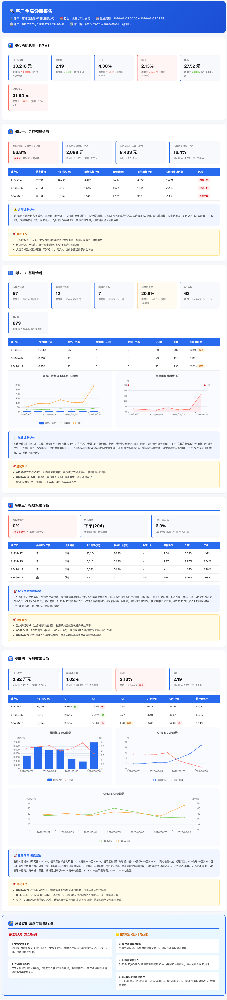
诊断报告交付 · 标准化结构化输出
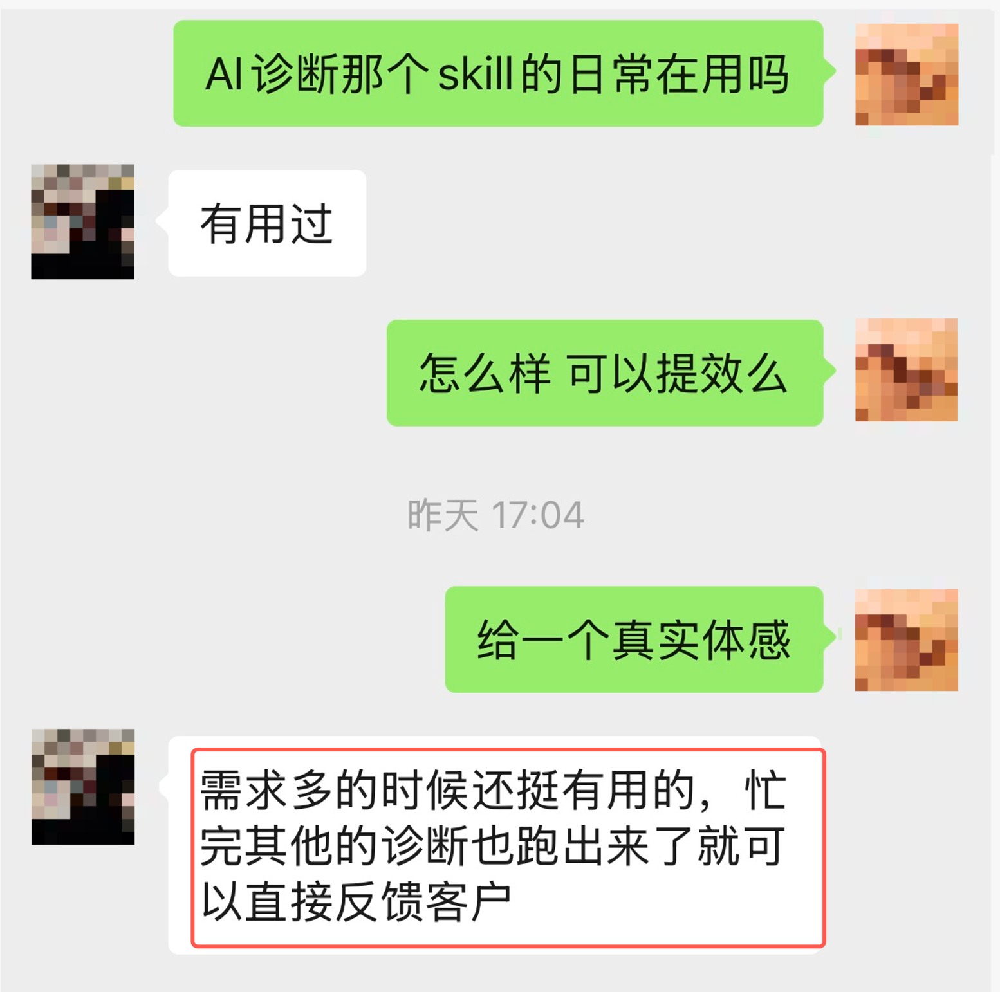
Skill 上线后 · 一线同学使用反馈（一）
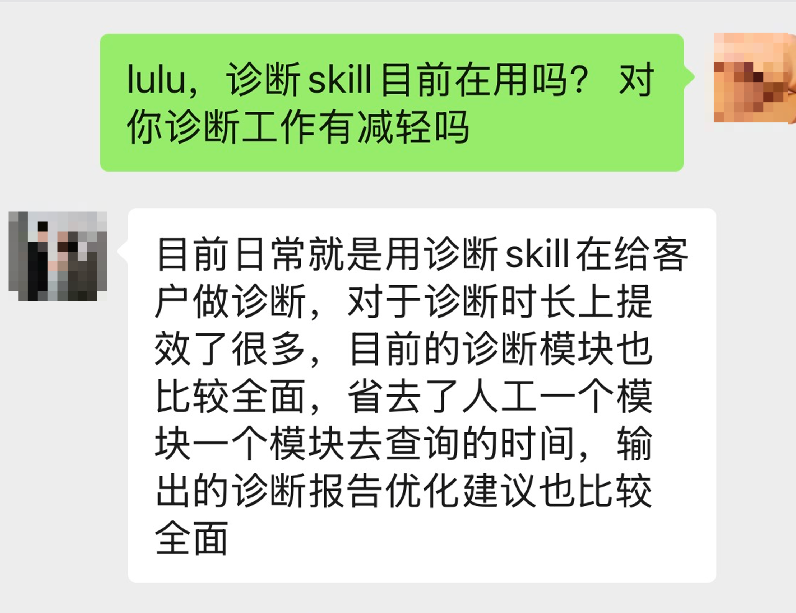
Skill 上线后 · 一线同学使用反馈（二）
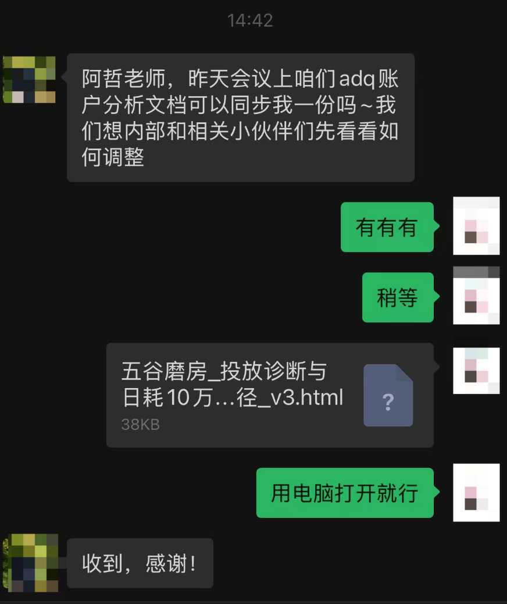
报告分享后 · 获客户高度认可
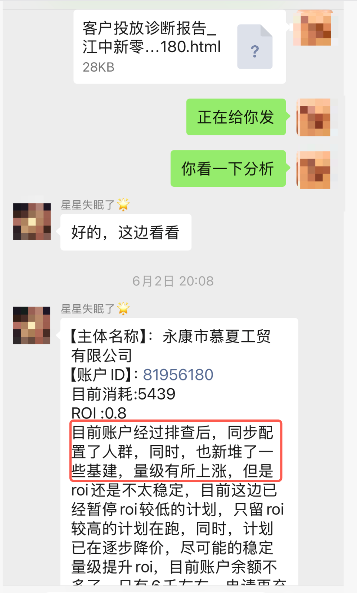
客户诊断调整后 · 消耗量级提升数据
04 · 技术深度与工具组合
⚙️ 技术架构 · 非产研团队 AI 工具深度整合
🔧 主要工具组合
①腾讯广告内部诊断平台：数据底座，提供投放数据拉取与初步聚合
②adataclaw 客户诊断 SKILL：多模块组合分析、智能归因排序，生成可视化价值图
③标准化 Prompt 体系：运营团队自主设计，确保结论结构性与一致性
④诊断模板封装：AI 输出封装为可直接交付的报告模板，开箱即用
💡 方案独创性
★非产研主导落地：运营团队发起并端到端推进，打破固有协作模式
★业务逻辑深度嵌入：Prompt 高度结合广告投放诊断专业知识，非通用 AI 调用
★模块化组合排序：智能识别主因、次因，逻辑严密性优于人工
★运行稳定：多轮实际客户诊断验证，输出稳定、结论可信度高
05 · 应用潜力
♻️ 可复用性
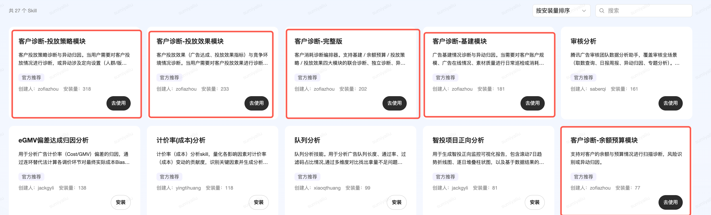
Skill 上线后 · 累计安装次数数据
📊 调用活跃度分析
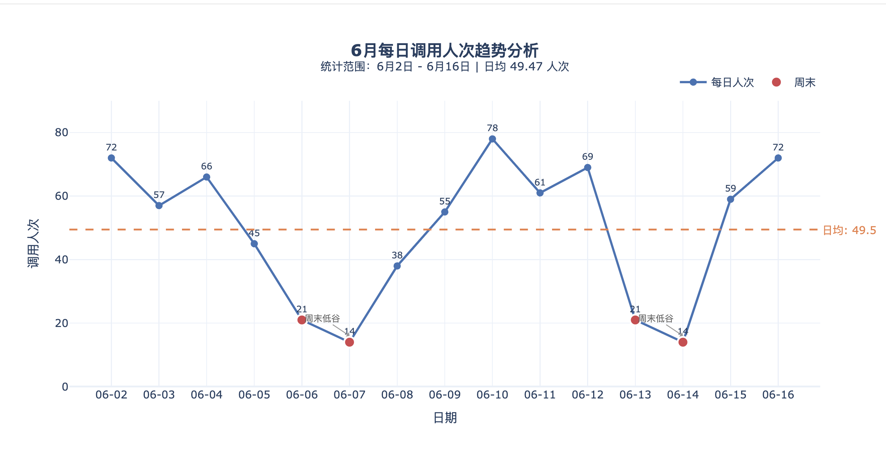
6月每日调用人次趋势（6.2–6.16）· 工作日活跃度显著高于周末
✅ 复用条件
→已上线腾讯广告内部 Skill 市场，其他团队可直接安装使用
→需具备：基础广告投放知识 + AI 工具初步使用能力
→模板与 Prompt 可按不同行业/客户类型定制，扩展性强
📦 沉淀资产 · ✨ 用户体验 · 📖 过往分享
✅ 已产出标准化资产
→诊断报告模板：结构化输出，可直接对客交付，统一标准
→Prompt 模板集：覆盖主要诊断场景，经多轮验证迭代
→操作 SOP：从数据拉取到结论输出的标准操作流程
→KM 知识沉淀：实践方法论已发布内部文章，供全团队参考
✅ 体验完整度
→交互流畅：在现有工作流中直接触发，无额外学习成本
→输出直观：可视化价值图 + 分点结论，易于理解和对客传达
→响应准确：经多客户验证，结论准确性获认可，误判率低
📖 过往分享
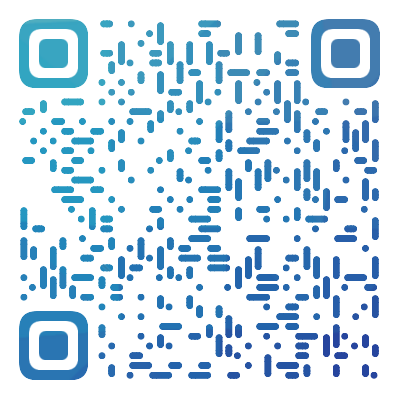
KM 内部文章
客户广告诊断 AI 实践全记录
涵盖方案背景、落地过程、效果数据
扫码查看完整分享 →
adataclaw 客户诊断 SKILL 不只是一次工具迭代，更是一线服务能力的系统性升级。它将过去耗时 45–60 分钟的手动诊断链路，压缩为 AI 驱动的即时结论输出，让每一位一线同学都能交付更深度、更专业的诊断报告。从解放重复操作、到支撑重点客户、再到带动消耗量级提升，adataclaw 客户诊断 SKILL 正在成为提升一线服务效率、驱动业务持续增长的重要基础设施，也为运营团队以 AI 能力突破岗位边界提供了可复制的范本。
adataclaw 客户诊断 SKILL · 广告诊断 AI 实践 · 2026.06 · 业务价值说明